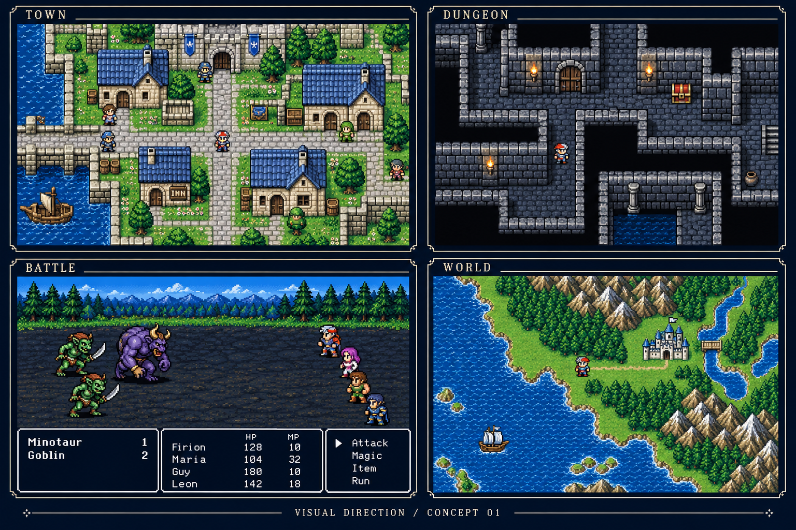
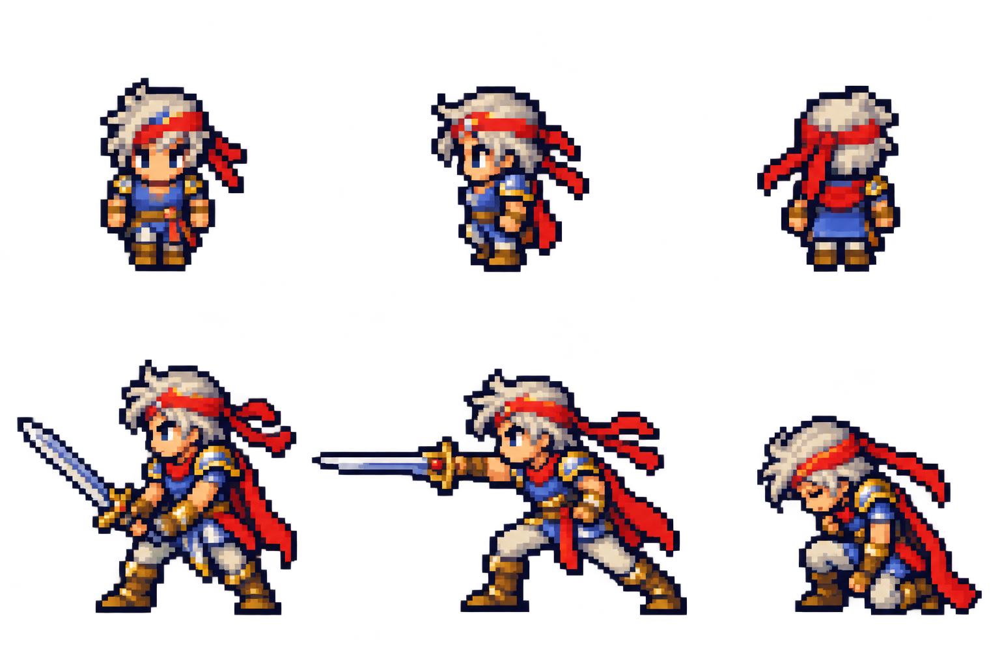
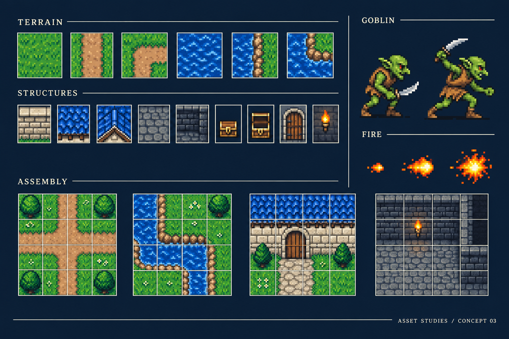

DESIGN STUDY 001
A familiar world.
A clearer window into it.
Firion’s Final Fantasy II, rooted in the Japanese Famicom original. A 256 × 240 composition, with a richer pixel-art direction for review.
Review higher-resolution animations and new environment tiles →
These are editable schematics and generated concept studies. Layout fidelity is provisional; no screen is an exact reference reconstruction or production asset.
01 / Interface studies
8 SCREENS · SOURCE SVG02 / Pixel-art direction
STYLE APPROVED · ASSET REVIEW IN PROGRESSGBA-era pixel detail and color, held inside the original composition. These studies set a visual target; they are not extracted game tiles or import-ready sprite sheets.

World concept loading / pending generationScale, palette, atmosphere.
Evaluate tile readability and quiet scenery around the party.

Character concept loading / pending generationA recognizable silhouette.
Evaluate costume hierarchy, sprite scale, and facing clarity.

Environment concept loading / pending generationOne cohesive tile language.
Evaluate ground, architecture, foliage, and material boundaries.
Original-version references
Original screen structure is the baseline. Generated art above is separate. GBA visual-quality benchmark ↗
 Online reference unavailable.
Online reference unavailable.Open Nintendo’s conversation guide ↗
 Online reference unavailable.
Online reference unavailable.Open Nintendo’s menu guide ↗
 Online reference unavailable.
Online reference unavailable.Open Nintendo’s battle guide ↗
Optional online images: three Nintendo-hosted GIFs. All wireframes, concepts, controls, and notes work offline. No remote scripts, analytics, fonts, or network submission.
YOUR REVIEW
What should stay?
What should change?
Notes are saved in this browser when local storage is available. Export to keep a portable copy. No notes are sent anywhere.
Review scope: all eight screen layouts, generated art direction, keyword flow, battle targeting, and return paths. Exact Japanese text, tile coordinates, and production balance require a reference audit.